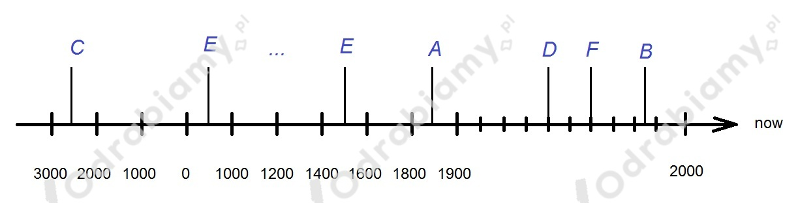

Rozwiązanie:

(Okres średniowiecza trwał od ok. V do XV wieku, dlatego literę E należy postawić w tym przedziale)
|
When - which decade, century or era? |
Why? |
|
|
Nick |
the late 1930s / early 1940s |
to see Spitfires and Lancasters flying |
|
Kat |
the early 1960s |
to see how her grandmother dealt with similar problems when she was in her 20s |
|
Sam |
the ancient Babylon or ancient Egypt |
beacause he really likes the desert setting |
|
Hassan |
the Middle Ages |
to see how people lived without technology |
|
Luke |
the Dickensian period |
to experience the England that Charles Dickens painted in his novels |
|
Ellie |
the 1980s |
because of the music |
1. E
2. C
3. D
4. F
5. A
6. B
1. How he started his career.
2. He did it beacuse he has covered his basics.
3. Because he's a huge fan of his music and the 1950s and 1940s culture in America in general.
4. He is inspired by him a lot.
5. The period during the Second World War, in which he led the United Kingdom.
6. His story and his life - how he got to where he did.